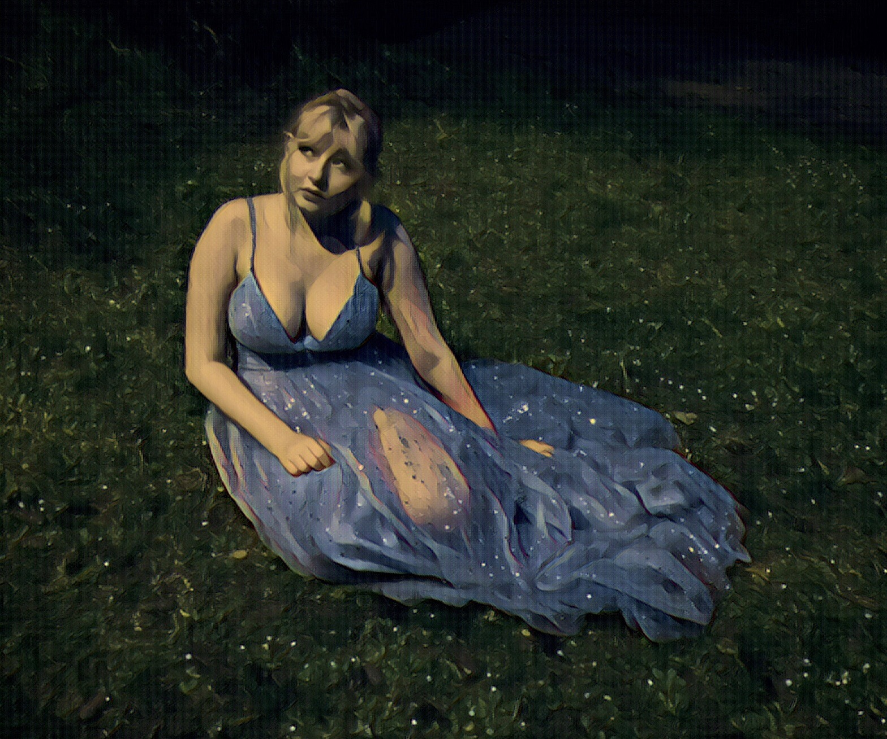

Posts and other material for BCORE 120 C (Art of Myth)
1 May, 2020
Today’s post will be rather short, as I planned to do a more in-depth analysis of the SCP foundation and Creepypasta and its influence on the modern horror genre and our perception of monsters (particularly their involvement with the rise of “cryptids” as modern cultural monsters) but had several things come up in other classes and with work applications that set me back. This week’s prompt was to create a monster, though, and I took inspiration from my most recent photoshoot of my sister (she likes to model, and I like photography and photoediting, so it works out) to construct this monster. Rather than typical fae/witch monsters (which derive their so-called “monstrosity” from attributing positions of power to women or effeminate traits to men), I based my construction’s aspect of monstrosity in very real threats to humanity; drug addiction, pharmaceutical price-gauging, and the dangers of creating an illegal chemical market rather than a legal-but-regulated one.
Historically, the title of queen of the fae has gone to petty and dominant but generally benevolent rulers such as Titania, Mab, and Morgan le Fay. This was not the case with Safira, the ascendent successor to Titania, who took power in the mid 1800s. With the advent of human industrialism, the natural world from which fae derive their power was being rampantly destroyed, and Safira swore revenge on humankind for their ruthless assault on the very foundation of fae society. Though the inhabitants of Alfheim condemned her violent ways, the pixies and satyrs of the Otherworld were glad to help their queen give rise to an empire to rival all humankind, rooted in the policy of literal psychological warfare: the destruction of humanity by means of controlling their minds, and driving them mad.
Safira divided her war into three primary sects; subjugation of humanity though induction of fear (typically through hallucinations) arising from deregulation of fae product safety codes, induction of dependency on fae product through the spread of addictive substances, and total sociofinancial destruction of affected humans by continuously increasing the prices of fae products as their demand increased. As much as a $2000 charge for a single pill can be attributed to a reign of terror such as hers, so too can the presence of addictive “fairy dusts” passed across human lands, allowing the unseelie enchanters and enchantresses to spin the minds of those who used it unsafely into a downward spiral of madness.
Moral of the story: If you wouldn’t eat a random mushroom in the forest, don’t start snorting powder that is scientifically proven to ruin your life.
Personally, just as a side note, I don’t have anything against drugs that don’t actively harm your body (like weed, LSD, nonaddictive depressants and stimulants, all that)- I just think the private pharmaceutical industry and corrupt justice system has put most drugs in a position where people CAN’T safely acquire or take them. If the risk doesn’t come from the drug, it comes from those persecuting its use, and the jarring financial cost of drugs (even and especially ones that people literally need to survive like insulin!) The pharmaceutical industry is quite literally conflating ableism with classism by taxing individuals that need chemical assistance for survival or daily function at staggering rates.
See ya next time!